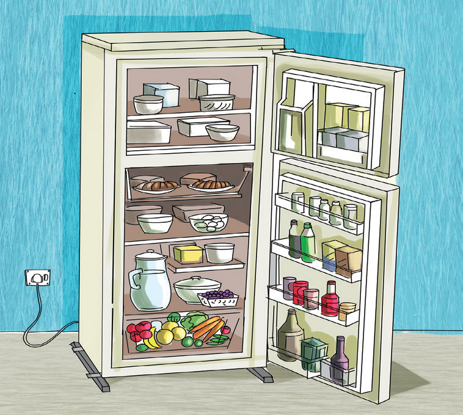

Sura ya Tatu
Matumizi ya nishati
Katika Sura ya Pili, ulijifunza kuhusu nishati. Katika sura hii, utajifunza kuhusu matumizi ya nishati katika vifaa mbalimbali. Pia, utajifunza namna ya kuhifadhi chakula kwenye jokofu na aina za majiko ya kupikia chakula. Umahiri utakaoupata katika sura hii, utakuwezesha kutumia nishati katika vifaa vya kuhifadhi na kupikia chakula kwa usahihi. Pia, utachukua tahadhari za usalama wakati wa matumizi ya nishati.
Jokofu
Jokofu ni kifaa kinachotumika kuhifadhia vitu mbalimbali katika hali ya ubaridi ili visiharibike. Kuna majokofu yanayotumia nishati mbalimbali kama nishati ya umeme au fueli mfano mafuta ya taa.
Sehemu za kuhifadhia vyakula katika jokofu
Jokofu lina sehemu mbili zenye viwango tofauti vya joto. Sehemu hizo ni ile inayogandisha na isiyogandisha. Hivyo, katika kuhifadhi vyakula ni muhimu kuzingatia sehemu sahihi ya kuweka vyakula. Kielelezo namba 1 kinaonesha jokofu.
